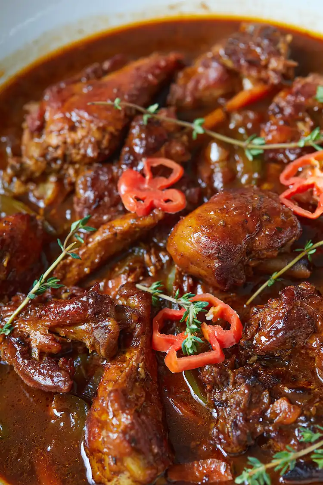

Brown Stew Chicken

Description
Brown stew chicken is a popular Jamaican dish usually eaten on Sundays along with rice and peas. The chicken is seasoned with traditional Jamaican herbs and spices and then “brown”, a term Jamaicans use to describe slightly frying the chicken so that it gains colour on the outside but is soft and juicy on the inside.
The crisp brown chicken is then simmered in a sauce you made in the same pot you brown the chicken in. The method is the same as cooking brown stew fish.
Ingredients
- Chicken
- Powder seasoning
- Jamaican flavour
- Bell pepper, onion, tomato, garlic
- pimento (allspice), ginger, and chicken stock/broth
Steps
- Remove skin: After washing the chicken with lime and vinegar, remove the skin. This dish is best with skin-less chicken.
- Season well: Season with salt, chicken/all-purpose seasoning and browning sauce. Add the scotch bonnet pepper, ginger, garlic, onion, scallion, thyme, pimento berries or use a blended green seasoning. The green seasoning is easy to make, the chicken absorbs more flavour when you use it, and you won’t have to won’t have to separate it from the chicken before cooking.
- Marinate: For maximum flavour, leave to marinate for at least an hour.
- Prepare to cook: Once you are ready to cook, separate the marinade (skip if you use the green seasoning) from the chicken but do not worry about trying to get this perfect. Just divide the larger pieces of onion, scallion, thyme etc.
Home